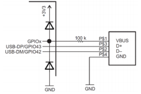

Universal Serial Bus (USB)#
The USB controller complies with USB 2.0 Implementers Forum certification standards, and utilizes full-speed (12 Mbps) operation in device mode and full-/low-speed (12 Mbps/1.5 Mbps) operation in Host mode. It has integrated PHY and thirty-two endpoints. There is one dedicated control IN endpoint and one dedicated control OUT endpoint. Additionally, there are fifteen configurable IN endpoints and fifteen configurable OUT endpoints.
The USB operates as a full-speed function controller during point-to-point communications with a USB host. It complies with the USB 2.0 standard, and a dynamically sizeable FIFO supports queuing of multiple packets.
USB Module
Not all C2000 devices have a USB module. Refer to the Peripheral Reference Guide for a list of supported modules on your device.
USB Standard#
The standard was formed by the USB Implementers Forum, or USB-IF (http://www.usb.org). USB-IF has defined standardized interfaces for common USB application, known as Device Classes:
Human Interface Device (HID)
Mass Storage Class (MSC)
Communication Device Class (CDC)
Device Firmware Upgrade (DFU) - Refer to USB-IF Class Specifications for more information
USB Communications#
USB is differential, asynchronous, serial, NRZI encoded, bit stuffed, and a host centric bus. A component on the bus is a host/controller , a device/target (also known as peripheral or function), or a hub (neither controller nor target; allows for expansion).
The communication model is heavily controller /target, as opposed to peer-to-peer/networking (i.e. 1394/Firewire). The controller runs the entire bus and is the only one that keeps track of other devices on bus and can initiate transactions. The target simply responds to host commands.
Enumeration#
USB is universal because of enumeration, the process in which a host attempts to identify a device. If no device attached to a downstream port, then the port sees Hi-Z. When full-speed device is attached, it pulls up the D+ line. When the host see a device, it polls for descriptor information, essentially asking, “what are you?” Descriptors contain information the host can use to identify a driver.
C2000 USB Hardware#
The USB controller requires a total of three signals (D+, D-, and VBus) to operate in device mode and two signals (D+, D-) to operate in embedded host mode. The VBus is implemented in software using external interrupt or polling.
GPIOs are NOT 5V tolerant, so you must use 100kΩ and internal device ESD diode clamps to make them tolerant.

Note:
(1) VBus sensing is only required in self-powered applications
(2) Device pins D+ and D- have special buffers to support the high speed requirements of USB; therefore their position on the device is not user-selectable.
USB Controller Summary#
The USB peripheral complies with USB 2.0 specifications and provides a full-speed (12 Mbps) device controller, a full-/low-speed (12 Mbps/1.5 Mbps) host controller, and a DMA controller that may be used to read and write to the USB FIFOs via software triggering.
Full software library with application examples is provided within C2000Ware.
Resources#
Feedback
Please provide any feedback you may have about the content within C2000 Academy to: c2000_academy_feedback@list.ti.com